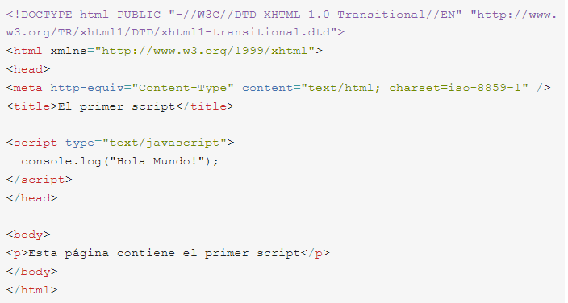
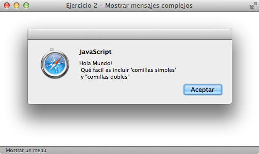

Ejercicio 1
Modificar el siguiente script para que:

Todo el código JavaScript se encuentre en un archivo externo llamado codigo.js y el script siga funcionando de la misma manera. Después del primer mensaje, se debe mostrar otro mensaje que diga "Soy el primer script" Añadir algunos comentarios que expliquen el funcionamiento del código Añadir en la página XHTML un mensaje de aviso para los navegadores que no tengan activado el soporte de JavaScript
Ejercicio 2
Modificar el script del ejercicio anterior para que: El mensaje que se muestra al usuario se almacene en una variable llamada mensaje y el funcionamiento del script sea el mismo. El mensaje mostrado sea el de la siguiente imagen:
